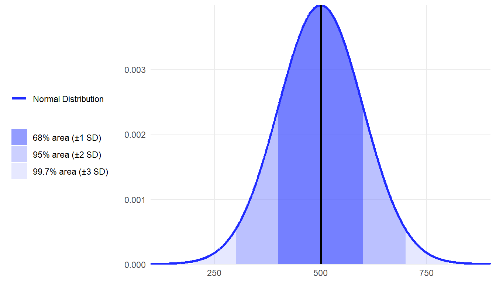
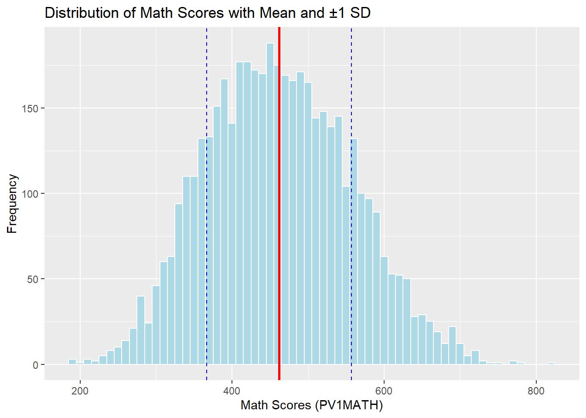

3 Chapter 3
Exploring Data Spread: Measures of Variability
Learning Objectives
By the end of this chapter, you will be able to:
Define and explain the concept of variability and its importance in statistical analysis, distinguishing between measures such as range, variance, and standard deviation.
Calculate measures of variability (range, interquartile range, variance, and standard deviation) for a given dataset and interpret what these values indicate about the spread of the data.
In this chapter, we are continuing the discussion about summarizing data. In the last chapter, we discussed how we can use one statistic to represent the central tendency of a dataset. Most people are likely already familiar with the concept of using an average, or the mean, to summarize data. In this chapter, we will explore how we can use other statistics to represent the spread, or variability, in a dataset. Variability refers to the extent to which data points in a dataset differ from each other and/or from the central value (e.g., the mean). It is a measure of how spread out or dispersed the data are. High variability indicates that the data points are more spread out, while low variability means they are closer together. A measure of variability should be reported along with any measure of central tendency because they provide different, but complementary information.
Variability is often a little tricky to understand, so let’s look at two simple datasets to help with our learning.
Set A: 47, 48, 49, 50, 51, 52, 53
Set B: 20, 30, 40, 50, 60, 70, 80
The mean for each dataset is 50, but these sets of numbers are quite different! The numbers in Set B are more spread out from the center, which is another way of saying they have greater variability. If we only report the mean for each dataset, then we have really not summarized the data well.
Before we talk about the different measures of variability, the table below includes some examples of variables with high, low, and no variability.
High variability
- Semester tuition rates across all public and private colleges and universities in the United States.
- Salaries of college graduates entering the workforce.
Low variability
- Starting salaries of state employees in similar positions.
- High school GPAs of students who are accepted to elite private colleges.
- Standardized math scores for 8th grade students in a gifted education program.
No variability
- Grade level (for a program that only includes 5th graders).
- Fixed-rate mortgage payments over the course of a loan.
- Enrollment fee for a program in dollars.
3.1 Measures of Variability
note: Perhpas splitting into sections would be nice here?
Just like with central tendency, there are several different ways to measure and report the variability of a dataset. We introduce four different measures of variability: range, interquartile range, standard deviation and variance.
A relatively crude or simple indicator of variability is the range. The range is a measure of variability that represents the difference between the largest and smallest values in a dataset. It provides a simple indication of how spread out the data are. For example, the range in Set A above is 6 (the range = the largest value – the smallest value, i.e., \(53 - 47 = 6\)), and the range in Set B is \(60\) (\(80 - 20\)). You can see that even if we only knew the range, we would get a sense that these two datasets were different.
However, a major limitation of range is that it is affected by outliers. Let’s insert a third dataset that looks like this: \(0, 56, 57, 58, 59, 60, 60\). We still have a mean of \(50\) and a range of \(60\), but the range seems misleading. That \(0\) in our third dataset is a complete outlier because it is far below the rest of the values. It could be an odd case, or even a typo, but it changes the range of our third dataset from \(4\) to \(60\), completely changing our understanding of what the data look like.
Interquartile range, or IQR, is the difference between the first and third quartiles, or the 25th and 75th percentiles. Much like how the median was better than the mean when the data included major outliers, the IQR is better than the range in the same circumstances, because it is less likely to be affected by extreme values.
To find the IQR, start by organizing your dataset in ascending order. Next, divide the data into two halves to calculate the first quartile (\(Q_1\)) and third quartile (\(Q_3\)). The first quartile (\(Q_1\)) is the median of the lower half of the data, representing the 25th percentile, while the third quartile (\(Q_3\)) is the median of the upper half of the data, representing the 75th percentile. The IQR is then calculated as \(Q_3\)−\(Q_1\), which measures the range of the middle 50% of the data, providing a robust indicator of variability that is less sensitive to outliers. Let’s compute the IQR with a sample set of data.
Suppose you have the dataset: \(3, 7, 8, 12, 13, 15, 16, 20, 21\).
We first find the median.
- Since we have 9 values, the median is the fifth value: \((9+1)/2 = 5\). The fifth value is \(13\). The median of this dataset is \(13\).
We next find the median of the lower half of the dataset. Since we have four values, we will need to add the two middle values (\(7 + 8\)) and then divide by \(2\) to get \(7.5\). The first quartile is equal to \(7.5\).
We then find the median of the upper half of the dataset. Since we again have four values, we will need to add the two middle values (\(16 + 20\)) and divide by \(2\) to get \(18\). The third quartile is equal to \(18\).
Last, we find the difference between the third quartile and first quartile (\(18 – 7.5\)), which is equal to \(10.5\). Thus, the IQR for this example is \(10.5\).
Standard deviation (SD) tells us how far away, on average, each individual data point is from the mean. In other words, is this a dataset where most of the individual points are clustered close together, so each point is very close to the mean (small standard deviation)? Or are the individual points spread much farther apart, so any given value could be quite different from the mean (large standard deviation)?
Think about how you might figure out the standard deviation if you had to invent statistics yourself. It was stated earlier that it is how far away each data point is, on average. We know that we find an average by adding up a bunch of values and dividing by the number of values, right? So, in theory, we could find the mean, then take every single individual data point, and figure out how far away they are from the mean. Add them all up, divide by the number of data points, and then we have the average distance away, right?
Not quite, due to one problem – negative numbers. By definition, some data points are going to be above the mean and some will be below. Say you have a mean of 50, and one data point is 45 while another is 55. If we take the differences and add them up, we get -5 + 5 = 0. This is not helpful at all. So, what do we do? Think back to the last chapter when we were learning about the mean. The mathematical way to solve this problem is to square the differences, which results in only positive numbers.
This brings us to variance, which is a measure of variability that indicates how far the data points in a dataset are spread out from the mean. It is calculated as the average of the squared differences between each data point and the mean, and the equation is listed in the next table. By squaring the differences, variance gives greater weight to larger deviations, making it sensitive to extreme values in the dataset. While variance effectively quantifies dispersion, it is expressed in squared units of the original data, which can make it less intuitive for interpretation compared to the standard deviation. Variance is a fundamental concept in statistics, as it forms the basis for other measures of variability, such as the standard deviation, and is crucial in fields like probability, regression, and hypothesis testing.
Let’s calculate the variance for a very simple dataset containing just four numbers: \(5, 7, 9, 11\).
The mean for our dataset is \(8\):
- \((5 + 7 + 9 + 11)/4 = 8\)
Subtract the mean from each of our values and square the result:
\(5 – 8 = -3, -3^2 = 9\)
\(7 – 8 = -1, -1^2 = 1\)
\(9 – 8 = 1, 1^2 = 1\)
\(11 – 8 = 3, 3^2 = 9\)
Sum the squared differences and divide by the number of data points:
- \(9 + 1 + 1 + 9 = 20, 20/4 = 5\)
The variance for our dataset is \(5\).
This concept of the “sum of squares” is going to become very important when we learn topics like Analysis of Variance (ANOVA) in later chapters. If you find yourself confused later about what “sum of squares” means, just remember that it has to do with variance.
Back to the current topic, we now have a value of 5, the variance, that tells us the average squared distance each point is from the mean. However, it is hard to interpret squared values, so what is our last step? We take the square root of the variance, and we call that the standard deviation, which is on the same scale as the original variable. Essentially, we square the differences to deal with negative numbers, and then we un-square the result so the statistic is easier to work with for interpretation. This means the standard deviation for our example is approximately 2.24 (i.e., 5–√ 5
). Any time you see variance and standard deviation reported, the second value will be the square root of the first.
A couple more notes before we get to the formulas. First, we can find the variance and standard deviation for a population or a sample, and the notation is different for each (see the following table). Most of the time we’re working with samples, but it’s good to know both. Second, if we only have a sample, then we have to divide by (n – 1) rather than N, where N represents the population size and n represents sample size, respectively. The quantity of (n – 1) for the sample variance and standard deviation estimators is known as the “degrees of freedom” (or df). We use the df to obtain an unbiased, or more accurate, estimate of the population parameter when we only have a sample to analyze.
The table below shows how to calculate the variance and standard deviation by hand, with the correct notations for populations and samples: \(σ_x^2\) and \(σ_x\) represent population variance and standard deviation of variable \(x\), respectively. \(s_x^2\) and \(s_x\) represent sample variance and standard deviation of variable \(x\), respectively. \(\mu\) is a population mean and \(\bar{x}\) is a sample mean of variable \(x\).
| Population (\(\sigma^2,\,\sigma\)) | Sample (\(s^2,\,s\)) | |
|---|---|---|
| Variance | \(\sigma_x^2=\dfrac{\sum (x_i-\mu)^2}{N}\) | \(s_x^2=\dfrac{\sum (x_i-\bar{x})^2}{n-1}\) |
| Standard Deviation |
\(\sigma_x=\sqrt{\dfrac{\sum (x_i-\mu)^2}{N}}\) | \(s_x=\sqrt{\dfrac{\sum (x_i-\bar{x})^2}{n-1}}\) |
3.2 Characteristics of Variability
Here is a summary of the characteristics of data variability measures.
Higher values indicate a larger amount of variability than lower numbers.
When you have no variability, the numbers are constant (e.g., for the dataset 3, 3, 3, 3, 3, 3, the variance and standard deviation equal 0).
The variance tells you the average distance from the mean, in squared units.
The standard deviation is just the square root of the variance (i.e., it brings the squared units back to regular units).
The standard deviation tells you approximately how far the numbers tend to vary from the mean. Making a judgment about how large or small the standard deviation is depends entirely on the unit of measurement for your variable.
If the entire range of scores is 1 to 100, then you can say a dataset with a standard deviation of 20 has more variability than a dataset with a standard deviation of 10.
However, a standard deviation of 10 on a dataset that ranges from 1 to 100 could indicate much greater variability than a standard deviation of 20 on a dataset that ranges from 1 to 1,000.
3.3 Standard Deviation and the Normal Curve
We are going to learn a lot more about the normal curve, or bell curve, later but many current and future educators already have at least some knowledge of the concept. Thus, let’s focus on how the normal curve relates to standard deviation.
If data are normally distributed, then an easy rule to apply to the data is the empirical rule, or 68/95/99.7 percent rule. That is:
Approximately 68%, or just over two-thirds, of all individual cases will fall within one standard deviation of the mean, either above or below.
Approximately 95% of cases will fall within two standard deviations of the mean.
Approximately 99.7% of cases will fall within three standard deviations of the mean.
When you hear the term standardized tests, what that usually means is that the test has been standardized to fit the normal distribution. If you hear that a national standardized test has a mean of 500 and a standard deviation of 100, then you can apply the empirical rule and know that 68% of test takers score between 400 and 600 points.

3.3.1 Common Misconceptions About Variability
Here are some common past misconceptions that students have had about variability, with brief explanations of the correct understanding for each concept.
Misconception: Variability is undesirable and should be minimized or eliminated.
Reality: Variability is an inherent and necessary component of any dataset. In many cases, it offers crucial insights and is essential for understanding differences within a dataset and patterns.
Misconception: Variability in data occurs due to measurement errors.
Reality: Although variability may include measurement error, it also reflects genuine differences between observations, which are essential for understanding patterns and drawing meaningful conclusions.
Misconception: Low variability is often interpreted as a sign of grader accuracy and consistency in the data and considered a desired characteristic of data.
Reality: While low variability may indicate precision, it does not necessarily ensure accuracy or representativeness. For example, a thermometer that consistently provides incorrect readings has low variability but isn’t accurate.
Misconception: Increasing the sample size (e.g., from 10 cases to 100 cases) eliminates variability in the data.
Reality: Larger sample sizes reduce sampling variability (the differences between sample statistics and the population parameters, which is sampling error), but the natural variability in the population remains unchanged. This means that, in theory, the sample size doesn’t affect the inherent variability in data.
Misconception: It is commonly believed that all measures of variability, such as range, variance, standard deviation, or interquartile range, tell the same story.
Reality: Various measures of variability emphasize different characteristics of a dataset. For example, the range focuses solely on the extremes, whereas the standard deviation accounts for the distances of all data points from the mean.
Misconception: Variability measures, like standard deviation, are unrelated to measures of central tendency, like the mean.
Reality: Variability is closely linked to the central value used in its calculation. For instance, variance is calculated relative to the mean, highlighting the importance of the chosen measures of central tendency in interpreting variability.
Misconception: Mean and standard deviation values alone give enough insights into a dataset.
Reality: Mean and standard deviation offer valuable statistical summaries, but they may miss crucial patterns like extreme values (outliers), asymmetric distributions (skewed distributions), or multiple peaks in the data. Additional analysis beyond these basic measures is often needed for a complete understanding.
Misconception: High variability indicates that the data may be unreliable.
Reality: Actually, high variability in data doesn’t necessarily mean the data are untrustworthy. High variability simply means there’s a wide spread or dispersion in the values. The data could be perfectly accurate and reliable while still showing large variations.
Misconception: Knowing standard deviation of a dataset is sufficient to understand how data are spread.
Reality: While standard deviation measures typical distance from the mean, it fails to capture the full picture of how data are distributed, including the shape, symmetry, and concentration of values.
3.4 Conclusion
In conclusion, this chapter has provided a thorough exploration of variability, a crucial aspect of statistical analysis that complements measures of central tendency. By understanding range, interquartile range, variance, and standard deviation, readers can better assess how data are spread and how individual data points deviate from the mean. This chapter emphasized the importance of selecting the appropriate measure of variability based on data characteristics, ensuring a more accurate interpretation of statistical findings. Additionally, it highlighted common misconceptions about variability, reinforcing the idea that variability is not an error but an essential component of data analysis. As we move forward, the next chapter will introduce visual representations of data, providing further insights into how data distributions can be effectively communicated and understood.
3.4.1 Key Takeaways for Educational Researchers from Chapter 3
- Variability highlights the extent of differences of each data point within a dataset beyond the central value. Two datasets may have the same mean values but differ drastically in their spread, impacting the interpretation of results.
- High variability in datasets (e.g., 8th graders’ standardized reading test scores across states) may suggest diverse population characteristics. On the other hand, low variability (e.g., standardized test scores within a specialized or sub-group) indicates uniformity, useful for specific interventions.
- Range can be largely impacted by outliers, while IQR or standard deviation will be less impacted by outliers.
- Central tendency, such as mean, median and mode, and variability are complementary metrics for understanding how data look. Reporting both metrics (e.g., mean and standard deviation) ensures a more complete summary.
- Educational researchers should choose measures of central tendency and variability that align with their data characteristics and research questions.3.5 Key Definitions from Chapter 3
The empirical rule, also known as the 68-95-99.7 rule, is a guideline stating that 68% of the data falls within 1 standard deviation of the mean, 95% of the data falls within 2 standard deviations of the mean, and 99.7% of the data falls within 3 standard deviations of the mean.
First quartile is another name for the median of the lower half of the values in a dataset (25th percentile).
Interquartile range (IQR) is a measure of variability that indicates the spread of the middle 50% of a dataset. It is the difference between the third quartile and the first quartile.
Range is a measure of variability that represents the difference between the largest and smallest values in a dataset. It provides a simple indication of how spread out the data is.
Standard deviation (SD) is the square root of the variance and is expressed in the same units as the data. It quantifies how much the individual data points deviate, on average, from the mean of the dataset.
Third quartile is another name for the median of the upper half of the values in a dataset (75th percentile).
Variability refers to the extent to which data points in a dataset differ from each other and from the central value (e.g., the mean or median). It is a measure of how spread out or dispersed the data is. High variability indicates that the data points are more spread out, while low variability means they are closer together.
Variance is a measure of variability that indicates how far the data points in a dataset are spread out from the mean.
3.6 Check Your Understanding
What is the range of the following dataset? (1, 2, 3, 4, 5, 6, 7, 8, 9, 10)
10
9
1
0
The ______ is the square root of the variance?
Interquartile Range
Range
Standard Deviation
Mean
What is the population variance of the following dataset? (1, 2, 3, 4, 5)
1
2
2.5
3
What is the population standard deviation of the following dataset? (1, 2, 3, 4, 5)
1.41
1.73
4.00
9.00
What percentage of values fall within 1 SD of the mean if data are normally distributed?
50%
68%
95%
99.7%
Chapter 3: Exploring Data Spread - Measures of Variability in R
In this section, we demonstrate how to compute and interpret measures of variability—range, interquartile range (IQR), variance, and standard deviation—using math achievement data from the U.S. sample in the Programme for International Student Assessment (PISA). We will use the PV1MATH variable (Math Plausible Value 1) as an illustrative example.
# Load required package
library(haven)
# Load the dataset
data <- read_sav("chapter3/Clean-data_mar6.sav")
# Extract the math plausible value
math_achi <- data$PV1MATH 1 Calculating the Range
The range shows the spread between the smallest and largest scores.
range_math <- range(math_achi) #return the minimum and maximum values
range_math [1] 188.352 819.508range_diff <- diff(range_math) #calculate the difference between the two values
range_diff [1] 631.1562 Calculating the Interquartile Range (IQR)
IQR represents the middle 50% of the scores and is more robust to outliers.
iqr_math <- IQR(math_achi) # Calculate the IQR
iqr_math [1] 137.578#return the 1st quartile (25th percentile), median (50th percentile), and 3rd quartile (75th percentile)
quantile(math_achi, probs = c(0.25, 0.5, 0.75)) 25% 50% 75%
391.3428 457.9070 528.9207 3 Calculating the Variance and Standard Deviation
Variance shows the average squared distance from the mean, and the standard deviation is its square root. By default, R calculates the sample variance and sample standard deviation, which divide by \((n - 1)\):
var_math <- var(math_achi) # Calculate the variance
var_math [1] 9049.605sd_math <- sd(math_achi) # Calculate the standard deviation
sd_math [1] 95.12941If needed, we can approximate population variance from the sample variance using the following adjustment:
n <- sum(!is.na(math_achi))
pop_var_math <- var_math * (n - 1) / n # Convert sample variance to population variance
pop_sd_math <- sqrt(pop_var_math) 4 Visualizing the Distribution with Mean and SD
We can use a histogram to examine how the scores are spread around the mean.
library(ggplot2)
mean_math <- mean(math_achi)
# Plot with mean and ±1 SD
ggplot(data.frame(math_achi), aes(x = math_achi)) +
geom_histogram(binwidth = 10, fill = "lightblue", color = "white") +
geom_vline(xintercept = mean_math, color = "red", linetype = "solid", size = 1) +
geom_vline(xintercept = mean_math + sd_math, color = "blue", linetype = "dashed") +
geom_vline(xintercept = mean_math - sd_math, color = "blue", linetype = "dashed") +
labs(title = "Distribution of Math Scores with Mean and ±1 SD",
x = "Math Scores (PV1MATH)", y = "Frequency") 
Let’s see how many students scored within 1, 2, and 3 standard deviations of the mean.
within_1sd <- mean(math_achi > (mean_math - sd_math) & math_achi < (mean_math + sd_math))
within_2sd <- mean(math_achi > (mean_math - 2*sd_math) & math_achi < (mean_math + 2*sd_math))
within_3sd <- mean(math_achi > (mean_math - 3*sd_math) & math_achi < (mean_math + 3*sd_math))
c(within_1sd, within_2sd, within_3sd) [1] 0.6612478 0.9611160 0.99890165 Interpreting Variability in Math Achievement Scores
5.1 5.1 Measures of Variability
The analysis of math achievement scores (PV1MATH) from the PISA U.S. dataset provides key insights into the distribution using measures of variability.
Range : The math scores in the U.S. sample range from 188.35 to 819.51, giving a total spread of 631.16 points. This wide range suggests a broad performance gap among students, though extreme scores may influence this value.
Interquartile Range : The IQR is 137.58, with the 25th percentile at 391.34 and the 75th percentile at 528.92. This indicates that the middle 50% of students scored within this 138-point window, providing a more stable summary of typical score spread.
Variance and Standard Deviation: The sample variance is 9049.61, and the standard deviation is 95.13. This tells us that, on average, individual scores deviate by about 95 points from the mean score.
5.2 Visualizing Spread and Normality
The histogram confirms a roughly symmetric distribution centered around the mean, with the bulk of scores falling within one standard deviation.
About 66.1% of students scored within 1 SD of the mean (approximately between 366.74 and 557.00).
About 96.1% fell within 2 SDs, and 99.9% were within 3 SDs.
These proportions align well with the 68-95-99.7% empirical rule, indicating that the distribution of math scores is approximately normal.
In summary, these metrics offer a comprehensive picture of performance variation, helping educational researchers understand both how typical students perform and how much their scores vary. Such insights are essential for designing instruction, identifying gaps, and guiding data-informed decision-making.